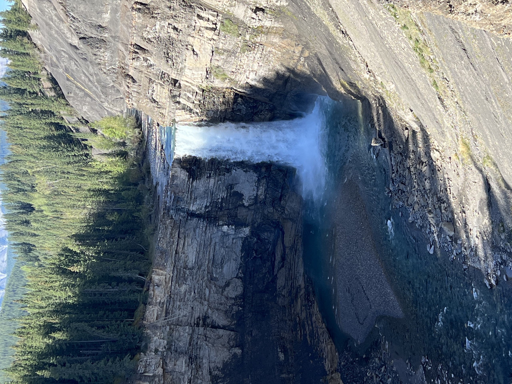
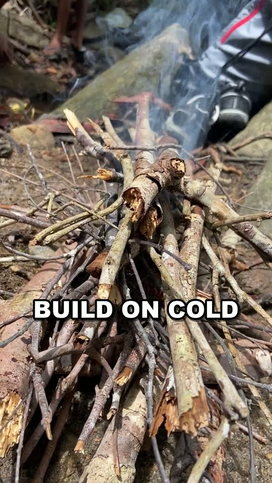
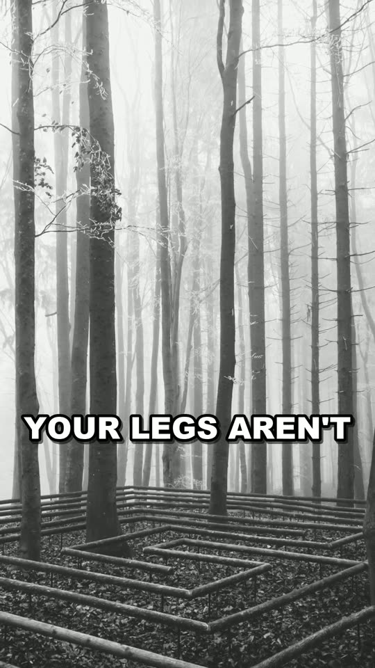
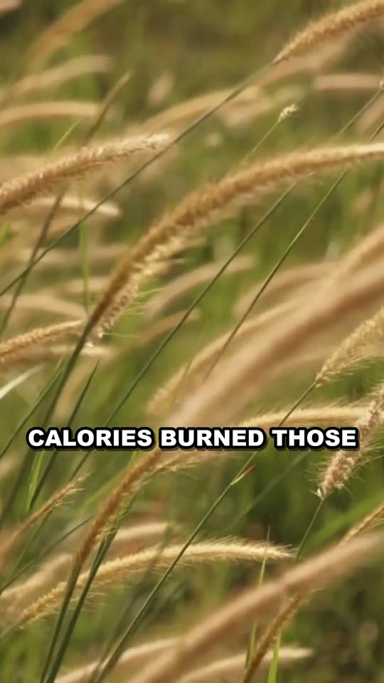
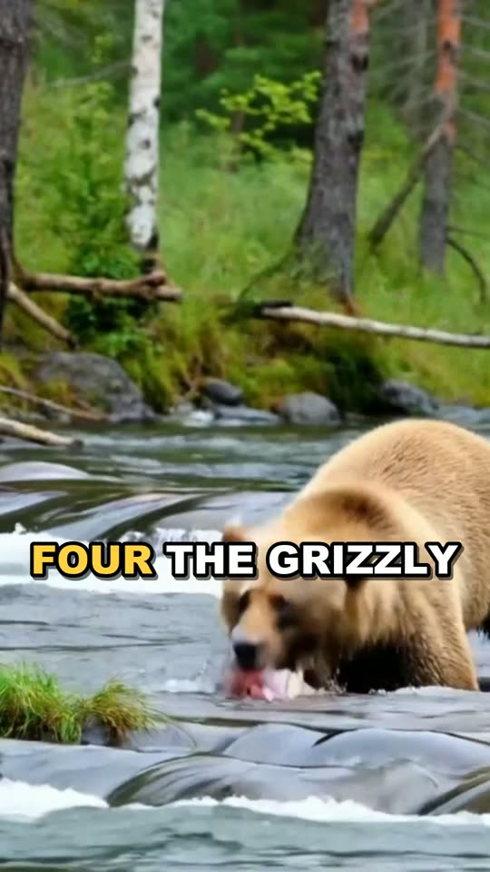
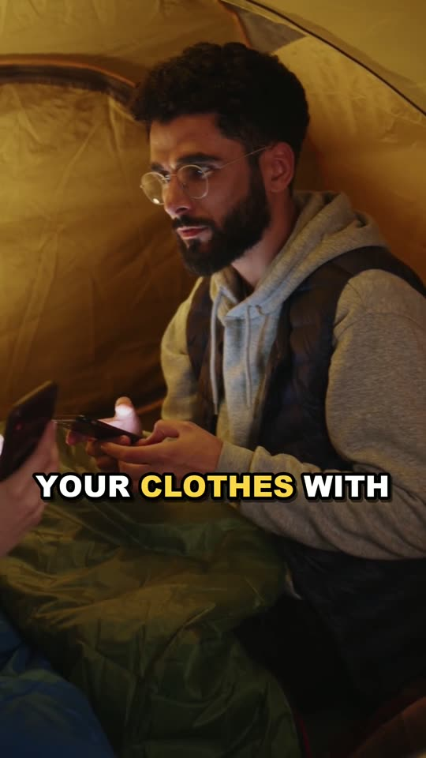

One affordable, science-backed pick per problem. No hype, no $400 jackets — the thing that works, and the video that explains why.

A 5,500 °F spark shower, roughly 12,000 strikes, zero moving parts. Matches quit long before this does.
View on Amazon →FROM: “WHY YOUR CAMPFIRE KEEPS DYING” · “THE RULE OF 3s” · +4 MORE
By the time you feel thirsty you're already ~2% dehydrated — and the clean-looking lake water is the bet you don't want. Filters to 0.1 micron, rated ~100,000 gallons.
View on Amazon →FROM: “YOU'RE DEHYDRATED BEFORE YOU FEEL THIRSTY” · “MYTH: CACTUS WATER”
Lost hikers walk in circles and genuinely can't tell. A baseplate compass doesn't die, doesn't drop bars, and doesn't care how confident you feel.
View on Amazon →FROM: “WHY LOST HIKERS WALK IN CIRCLES” · “TOP 5 NATURE MYTHS” · +6 MORE
Weatheradio Canada and NOAA broadcast warnings on 7 VHF channels your phone ignores — no cell signal, no data plan, and crank + solar power instead of battery anxiety.
FROM: “MOST LIGHTNING VICTIMS WERE NEVER STRUCK” · +5 MORE
A PLB transmits on 406 MHz straight to the international search-and-rescue satellites — no cell towers, no subscription. The mirror is the $15 daylight version: a flash visible 10 miles out.
FROM: “TOP 5 GREATEST RESCUES IN HISTORY” · +4 MORE
Deer are red-green colorblind — blaze orange reads as dull gray-brown to them and as neon to every human with a rifle. One color, visible only to the species that matters.
FROM: “WHY HIKERS NEED BLAZE ORANGE” · COMING THIS FALL
115 dB, no pea, no moving parts — nothing to freeze, jam or waterlog. A shout manages ~100 dB and your voice is gone in minutes; this is loud all day. (Made in Canada.)
View on Amazon →FROM: “TOP 5 NATURE MYTHS” · “RIP CURRENTS: SWIM SIDEWAYS”
Cold shock steals your breathing for the first minute — the minute swimming skill doesn’t exist yet. A paddling PFD floats you through the reboot with your airway up.
FROM: “THE FIRST 60 SECONDS IN COLD WATER” · “DEAD WATER”

300–400 lumens turns midnight trail into a wide, even pool of usable daylight — and both hands stay on the map, the stove, the dog. Phone flashlights die exactly when it matters.
FROM: “WHY YOUR CAMPFIRE KEEPS DYING”
8x magnification is the wildlife-safety trick: close enough to read behavior, far enough it never reads yours. Every animal video on this channel endorses distance.
FROM: “WHY YOU NEVER RUN FROM A BEAR” · “THE ANIMAL MORE DANGEROUS THAN BEARS”

Both guides lead with the poisonous lookalikes — the pages that actually keep you alive. A book teaches caution; it never replaces an expert standing next to the plant.
FROM: “THE ‘UNIVERSAL EDIBILITY TEST’ CAN KILL YOU” · “ANIMALS EAT IT” · +2 MORE
Blue-green algae is liver-toxic to dogs within hours, and they can’t tell good water from bad. Ninety grams of bowl plus carried water beats every “it looks clean.”
View on Amazon →FROM: “EVERY SUMMER, DOGS DIE WITHIN HOURS”
Squeezing a tick pushes its gut contents into you — that’s the infection route. The tool lifts and rotates: whole tick, mouthparts included, two or three turns.
View on Amazon →FROM: “TICK QUEST”
Severe cold can confuse people into undressing — by then it's late. Under 4 oz, whistle on the drawcord.
View on Amazon →FROM: “WHY DO HYPOTHERMIA VICTIMS UNDRESS?”
The Rule of 3s gives you three hours without shelter in bad conditions. This is those hours, at jacket-pocket weight.
View on Amazon →FROM: “THE RULE OF 3s”

The data isn't close: spray outperforms everything else at stopping a charge. The holster matters as much as the can — a deterrent inside your backpack is a fairy tale.
View on Amazon →FROM: “WHY YOU NEVER RUN FROM A BEAR” · “TOP 5 MOST DANGEROUS ANIMALS”

To a mosquito you're a lighthouse made of soup — CO₂, heat, and skin chemistry you can't switch off. DEET-free, made in Canada.
View on Amazon →FROM: “WHY MOSQUITOES ALWAYS FIND YOU FIRST”
Nothing matches — try “fire”, “water”, or clear the search.